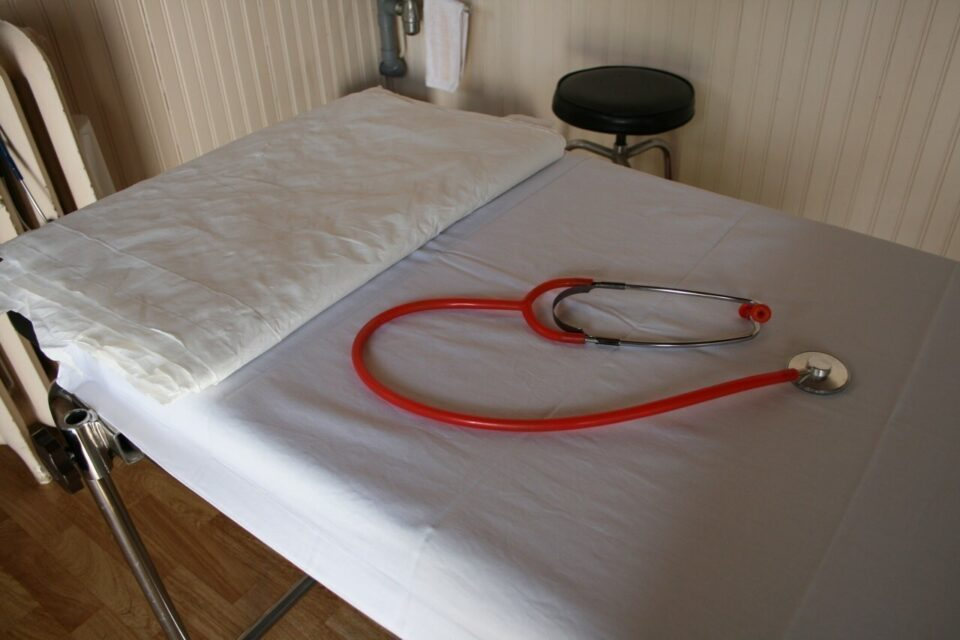

Source : Actu Lien
Résumé de l'article
Le département du Loiret organise une réunion d’informations le jeudi 26 octobre autour du thème l’accès à la santé par le numérique. Pour les prises de rendez-vous en ligne, les démarches de l’assurance maladie et les soins à distance. L’utilisation du numérique n’est pas toujours facile pour les seniors mais il peut leur permettre d’avoir un meilleur accès aux soins et à la santé. Plusieurs animations sont au programme : Des démonstrations pratiques de l’utilisation d’applications et de plateformes en ligne de santé. Des échanges avec un expert de l’Assurance Maladie, pour répondre aux questions sur leurs démarches en ligne et présenter Mon Espace Santé. Des stands d’information et des conseils personnalisés pour aider les participants à tirer le meilleur parti des ressources en ligne pour leur santé.
